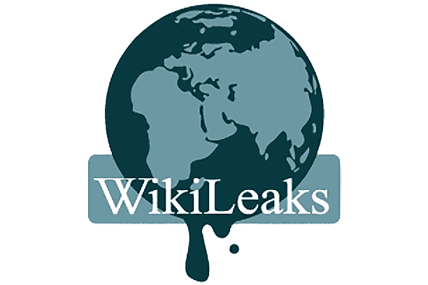

LE HACKER TRAQUE
WikiLeaks est une organisation non gouvernementale sans but lucratif fondée par Julian Assange en 2006, qui publie des documents classifiés, les leaks (« fuites »), provenant de sources anonymes.
Le site divulgue, de manière anonyme, non identifiable et sécurisée, des documents témoignant d'une réalité sociale et politique, voire militaire, qui serait cachée, afin d'assurer une transparence planétaire.
L'objectif à long terme est que WikiLeaks devienne
« l'organe de renseignements le plus puissant au monde ».
Julian Assange
Informaticien et cyber-militant d'origine australienne, Julian Assange est depuis 2010, au cœur d’une affaire politico-judiciaire d’importance majeure après des révélations sur la manière dont les États-Unis et leurs alliés ont mené la guerre en Irak et en Afghanistan. C’est depuis cet événement que l’affaire Assange/Wikileaks a pris une envergure mondiale. Toutes ces accusations amènent le gouvernement américain à adopter un comportement très offensif envers lui et à saisir la justice pour espionnage. Après des accusations d’agressions sexuelles par deux femmes suédoises, Julian Assange est arrêté au Royaume-Uni, le 7 décembre 2010, après le lancement d’un mandat d’arrêt international. Il nie les faits qui lui sont reprochés et est libéré sous caution.
Inquiet d’être extradé vers le sol américain où il risque jusqu’à 175 ans de prison, il se réfugie dans l’ambassade de l’Équateur à Londres, aprés avoir obtenu l’asile politique. Il y passe presque 7 ans, jusqu’à la fin 2019. Le nouveau Président lui retire le statut de réfugié politique (du jamais vu). Il est alors arrêté par la police britannique, et est condamné à 50 semaines de prison pour non respect de sa liberté conditionnelle. Le 4 janvier 2021 : la justice britannique rejette la demande d’extradition de Julian Assange vers les États-Unis en raison de sa santé mentale. Deux jours plus tard, il lui refuse sa libération sous caution. Julian Assange reste en prison. Il est à ce jour enfermé dans la prison de haute sécurité de Belmarsh, appelée aussi le « Guantanamo » britannique.
Héro pour les uns, traître pour d’autres, pour sûr, Julian Assange est le symbole de la liberté d’expression. Il a mis en exergue les défaillances du système judiciaire, la corruption, l’impunité et la toute-puissance de nos élites, accusé d’espionnage, pour avoir fait un vrai travail d’investigation, et révélé, des bavures, des crimes, et des horreurs commises par l’armée américaine, notamment en Irak et en Afghanistan. Il est torturé, maltraité psychologiquement, depuis 10 ans. Ses défenseurs ne cessent d’alerter sur la dégradation de son état mental et physique, et sur le traitement injuste dont il fait l’objet.
Enième rebondissement dans l’affaire Julian Assange,
Yahoo News a rapporté il y a quelques jours que la CIA,
sous la gouverne de Mike Pompeo, a planché en 2017
sur divers scénarii pour enlever Julian Assange,
qui s’était réfugié cinq ans plus tôt dans l’ambassade
de l’Équateur à Londres pour échapper à des allégations
d’agression sexuelle. La possibilité de le faire
assassiner aurait aussi été évoquée brièvement.
«Chaque fois que nous sommes témoins d’une injustice et que nous n’agissons pas, nous entrainons notre caractère à être passif, et perdons toute capacité à nous défendre.»
Julian Assange
Julian Assange incarne la résistance au travers du numérique, avec beaucoup d’autres lanceurs d’alertes
comme Chealsey Manning, qui a partagé des fichiers avec Wikileaks, Edward Snowden, qui a
révélé l'existence de plusieurs programmes de surveillance de masse américains et britanniques,
ou encore Anonymous.
Sans le numérique, ils n’auraient jamais pu dévoiler des milliers de documents, incluant des dizaines de
pays à travers le monde, et consultables aux quatre coins de la planète.